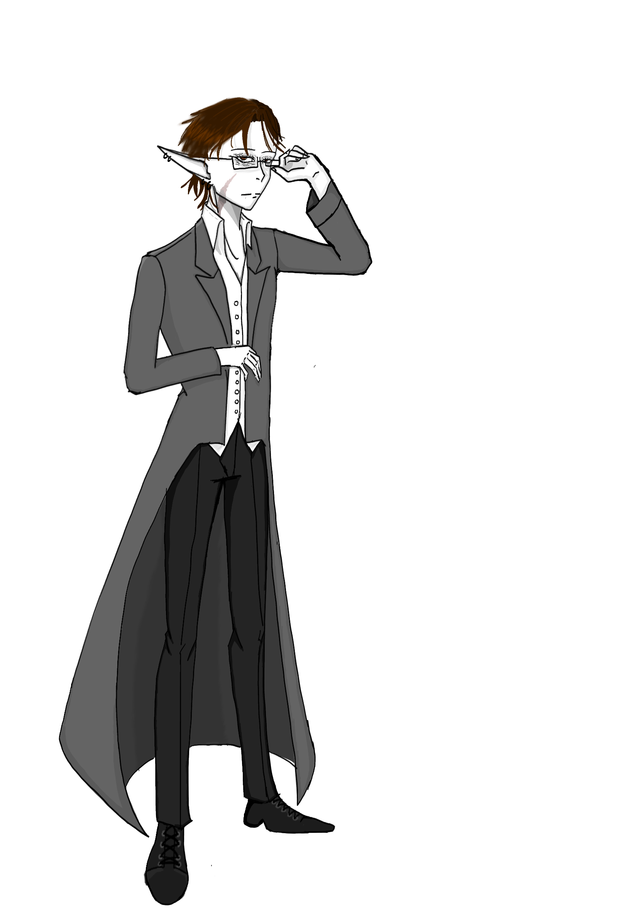

Home
Filvendore
Name:
Filvendore
Last name:
Lockridge
Age:
45
Genre:
Fantasy
Species:
Elf
Details: How I got my scar?
I was fighting Arathorn. He was young but albeit very experienced.
I knew I had the disadvantage. But my subordinates were all afraid of him. So I had to be the one to fight him.
I did it for Theodluin, my adoptive son. I can still hear his screams eco in my ears when one of them shot him in the eye.
He surrvived but barly. I remember attacking Arathorn in a misserble attempet to distract him. Then I ran and scooped a crying Theodluin in my arms.
But Arathorn had caught up to me and he wasted not even a second to strike. His sword stiked me over my cheek and throat. There you have it, how I got my scar. One of many. But I do not want to talk about the rest.
You want the story of Theodluin?
That is not my story to tell. You will have to ask him, although I am not sure he wants to talk about it.
I can say this much. I took him to Aithlin since we cooperated when the warriors attacked our territories.
